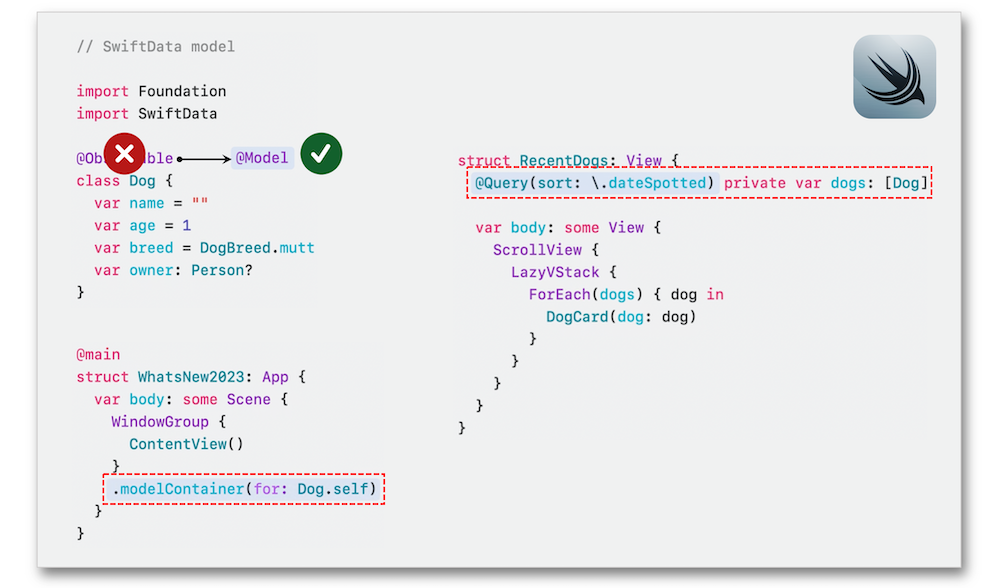

WWDC 2023: What’s new in SwiftUI
Find hereafter a detailed summary of a video that belongs to a taxonomy of some WWDC footages.
The original video is available on the Apple official website (session 10148).
"Learn how you can use SwiftUI to build great apps for all Apple platforms. Explore the latest updates to SwiftUI and discover new scene types for visionOS. Simplify your data models with the latest data flow options and learn about the Inspector view. We'll also take you through enhanced animation APIs, powerful ScrollView improvements, and a host of refinements to help you make tidier tables, improve focus and keyboard input, and so much more."
Hereafter, the underlined elements lead directly to the playback of the WWDC video at the appropriate moment.
Scope #
Scenes #
The common SwiftUI containers render a 2D window by using the native controls.
Volumetric style can also be applied to the scenes for bringing more depth in the user experience.
The immersion style gives rise to an environment that may encompass created objects and effects with the surrounding reality.
watch0SÂ 10 #
SwiftUI brings a new design to watchOS 10 while improving the user experience through the navigation and the transitions, adding a DatePicker and a new Lists selection to these features.
All the UI major components are automatically updated with the new enhancements.
Widgets #
SwiftUI enhances the power of the widgets for iOS 17 with the Standby Mode, iPadOS 17 with the Lock Screen, watchOS 10 with the Smart Stack and macOS Sonoma on the desktop.
Moreover, App Intents introduces interactivity for this type of element thanks to the SwiftUI-based architecture to enable this new cross-platform feature that can be defined and refined via the Xcode Previews.
Extensions #
Integrating Maps into an app becomes easier thanks to the expanded SwiftUI support for MapKit while adding annotations and overlays.
Many enhancements are introduced this year like the donut and pie charts with the new SectorMark...
... and a built-in support for selection.
SwiftUI provides a better developer experience for creating an in-app purchase interface tailored as well for accessibility as for localisation.
Data flow #
@Observable #
Adding this new macro to define a type brings about a SwiftUI dependencies automation for read properties with no needed wrapper.
Observable streamlines the use of ObservableObject by pointing out the State and Environment dynamic properties.
SwiftData #
The code entirely represents a model through this new framework while replacing Observable by the Model macro and adding a model container with the new Query dynamic property for management.

Enhancements #
As a dedicated view in the interface, this modifier displays details about the context or the current selection.
Persistence and customization of the columns ordering is now possible for the tables.
The folder structure is customizable for tables through the DisclosureTableRow coding element.
Sections can be expanded and collapsed as well via a specified identifier that will indicate the state thereof.
Finally, the display of row backgrounds and column headers with the prominence of backgrounds underneath other views have been improved for better refinements.
Animations #
This API defines a container that animates its content with keyframes, including multiple properties in parallel.
This API creates a container that automatically animates a single sequence of provided phases and that may also encompass an haptic feedback with the new sensory API.
Visual effects are easily applied thanks to a geometry proxy that doesn't take into account any Geometryreader.
The new ShaderLibrary makes Metal shader functions understood by the SwiftUI shape styles.
The textScale modifier applied to the units provides a logical text scale relative to the base font which is used.
The Slider symbol built-in bounce effect can be applied via the new symbol effect modifier whose goal is to animate a SF Symbol.
The typesettingLanguage modifier informs SwiftUI that extra space might be needed regarding a specific localized text.
Interactions #
SwiftUI streamlines the scroll transition effects with a new modifier.
New modifiers also improve the scroll behavior and the alignment of the elements thereof...
... while giving importance to the scroll position as well.
The High Dynamic Range is supported by SwiftUI that can now render an image at its best.
Adding the accessibilityZoomAction modifier after a magnification gesture brings about controlling the zoom with assistive technologies through available actions.
Menus in toolbars can be easily defined with actions highlighted by icons...
... adding a new picker style to present the options as a row of compact elements.
The circle shape is available to be used for drawing a button’s border.
A spring loading behavior may be activated to reveal actions for instance.
tvOS 17 introduces a highlight hover effect to expose a shiny impact.
An action can now be defined for a hardware keyboard input while the view has focus.